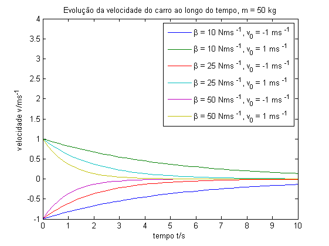
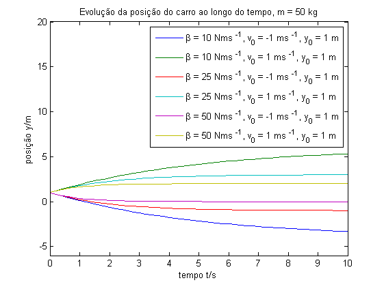

Contents
Ex. 1 - Simulação do movimento livre de uma viatura
close all
clear all
v0 = [-1 +1];
y0 = 1;
stop_time = 10.0;
m = 50;
beta = [10 25 50];
vlegend = cell(1, size(beta, 2)*size(v0,2));
plegend = cell(1, size(beta, 2)*size(v0,2));
vdata = cell(1, size(beta, 2)*2);
pdata = cell(1, size(beta, 2)*2);
for i = 1:size(beta, 2),
sim('carro');
vdata{2*i-1} = t;
vdata{2*i} = v;
pdata{2*i-1} = t;
pdata{2*i} = y;
for z=1:size(v0, 2),
vlegend{size(v0,2)*(i-1)+z} = sprintf('\\beta = %d Nms ^{-1}, v_{0} = %d ms ^{-1}', beta(i), v0(z));
plegend{size(v0,2)*(i-1)+z} = sprintf('\\beta = %d Nms ^{-1}, v_{0} = %d ms ^{-1}, y_{0} = %d m', beta(i), v0(z), y0);
end
end
figure(1);
plot(vdata{1:size(vdata,2)})
title(sprintf('Evolução da velocidade do carro ao longo do tempo, m = %d kg', m))
xlabel('tempo t/s')
ylabel('velocidade v/ms ^{-1}')
ylim([-1 +4])
legend(vlegend, 'location', 'NorthEast');
figure(2);
plot(pdata{1:size(pdata,2)})
title(sprintf('Evolução da posição do carro ao longo do tempo, m = %d kg', m))
xlabel('tempo t/s')
ylabel('posição y/m')
ylim([-6 +20])
legend(plegend, 'location', 'NorthEast');
 